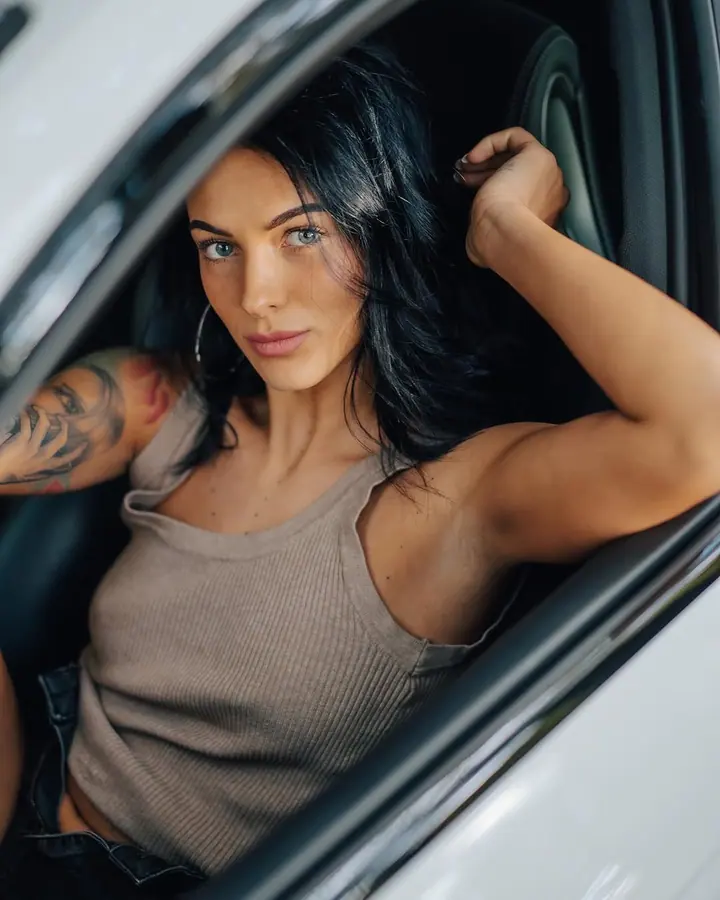

Glamour
Ženské portréty s výrazem a atmosférou. Fotím venku v přírodě, mezi starými zdmi i s autem, které na fotce hraje vlastní roli.

Fotograf glamour portrétů, svateb a akcí
Jmenuji se Martin Soška a fotím v Děčíně a v celém Ústeckém kraji. Nejvíc mě baví glamour portréty s atmosférou, ale rád vás doprovodím i na svatbě, při rodinném focení nebo na koncertě.
Zeptat se na termín
Ženské portréty s výrazem a atmosférou. Fotím venku v přírodě, mezi starými zdmi i s autem, které na fotce hraje vlastní roli.
Doprovodím vás vaším svatebním dnem a budu fotit přirozeně, v měkkém světle a bez zbytečného aranžování.
Klidné rodinné focení venku, kde je čas na objetí, smích i pohledy, které si mezi sebou vyměníte.
Jsem fotograf na volné noze z Děčína. Na focení mě baví hlavně atmosféra: podzimní louka, opuštěné schody, které zarůstají trávou, nebo auto zalité odpoledním sluncem. Taková místa dávají fotkám charakter a vám prostor být sami sebou.
Fotím glamour, svatby, rodiny i koncerty. Každé focení je jiné, ale vždycky stojí na stejné věci: dát chvíli čas. Proto se ke všem focením hodí moje heslo time for moments.
Kromě portrétů mě najdete i v zákulisí velkých akcí a na zápasech Clash of Stars. Na fotkách mi pořád nejvíc vydrží auta a urbex. Ta kombinace prostě nikdy nezklame.
Pošlete mi zprávu nebo e-mail na info@martinsoska.com a domluvíme termín, který vám sedí.
Probereme, jakou atmosféru chcete. Příroda, urbex, auto nebo něco úplně jiného, místo vybereme spolu.
Na focení vás povedu, takže se nemusíte bát, i když stojíte před objektivem poprvé. Dáme si čas, nikam nespěcháme.
Z focení vyberu nejsilnější snímky, upravím je a pošlu vám je v hotové podobě.
Jsem z Děčína a fotím hlavně v Ústeckém kraji. Po domluvě rád vyrazím i jinam.
Vůbec ne. Během focení vám poradím, jak se postavit a kam se dívat, a zbytek přijde sám.
Určitě, to mě baví nejvíc. Napište mi, co máte na mysli, a vymyslíme to spolu.
Stačí napsat přes formulář níže, na Instagram nebo na info@martinsoska.com. Ozvu se vám a domluvíme podrobnosti.